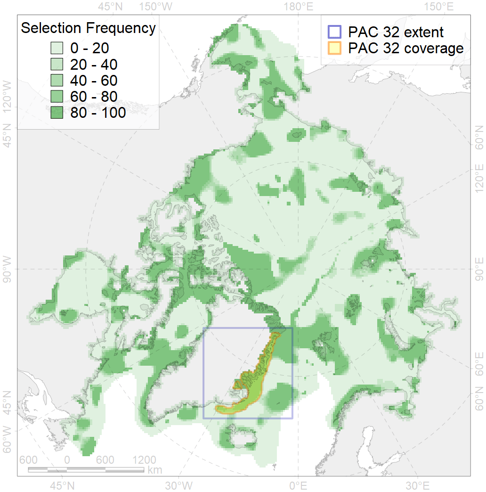
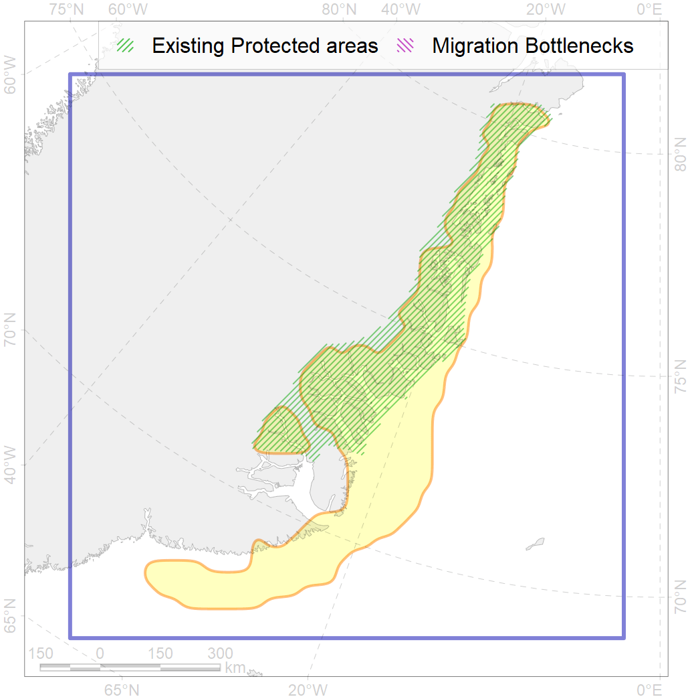

32
For more information regarding this PAC and to conduct custom spatial analysis using the PAC data or any spatial query, please consult Accenter.

0
CFs entirely within the PAC area
18
CFs at least 25% within the PAC area
23
CFs with at least 50% of their target achieved in the PAC
36
CFs with at least half of their target achieved in the PAC
| CF ID | CF Name | Proportion in the PAC | Conservation Target | Contribution to ArcNet Target Achievement | PAC’s Contribution to the Achieved Target |
|---|---|---|---|---|---|
| 1012 | Atlantic Walrus haulouts in East Greenland | 95.2% | 96.0% | 99.2% | 95.2% |
| 2025 | Harp seal whelping areas in the West Ice region | 90.4% | 48.0% | 164.2% | 95.4% |
| 5073 | Narwhal East Greenland stock winter core distribution | 87.3% | 72.0% | 95.5% | 94.3% |
| 1020 | Atlantic Walrus Winter Distribution in East Greenland | 70.6% | 67.2% | 93.7% | 92.9% |
| 7218 | East Greenland kelp patches (10-12) | 66.7% | 30.0% | 222.2% | 85.1% |
| 3122 | Polynyas distribution in the East Greenland region | 60.4% | 12.0% | 484.7% | 60.3% |
| 9024 | polar bear denning areas of EG (East Greenland) subpopulation | 54.8% | 64.8% | 81.9% | 76.0% |
| 3007 | Fast Ice distribution in the East Greenland region | 52.9% | 6.0% | 866.5% | 61.5% |
| 5072 | Narwhal East Greenland stock summer distribution | 49.7% | 48.0% | 100.1% | 63.6% |
| 6018 | Long-tailed duck (Clangula hyemalis) Greenland moulting&migration stopovers | 48.5% | 76.8% | 61.2% | 61.0% |
| 1004 | Atlantic Walrus Summer Distribution in East Greenland | 38.0% | 33.6% | 106.1% | 52.0% |
| 7156 | III.5.1. Northeast Greenland shelf and slope | 36.5% | 10.2% | 350.0% | 45.6% |
| 7158 | III.5.1.2. NE Greenland glacial troughs | 34.9% | 9.0% | 376.2% | 50.7% |
| 2031 | Hooded seal wheling areas in the West Ice region | 34.7% | 38.4% | 80.9% | 79.6% |
| 9006 | polar bear of the EG (East Greenland) subpopulation distribution | 32.9% | 32.4% | 92.7% | 44.8% |
| 2047 | Ringed seal whelping areas in Greenland region | 31.7% | 12.0% | 240.3% | 46.9% |
| 7033 | Northern and Eastern Greenland region | 29.2% | 12.2% | 234.4% | 41.6% |
| 7161 | III.6.1.1. SE Greenland medium and low profile shelf | 25.6% | 12.1% | 172.4% | 47.1% |
| 3054 | Multiyear Ice distribution in September in the Greenland Sea LME | 22.0% | 18.0% | 120.0% | 23.1% |
| 7157 | III.5.1.1. NE Greenland medium and low profile shelf | 21.3% | 6.3% | 330.1% | 30.9% |
| 2028 | Hooded seal molting areas | 21.0% | 38.4% | 49.8% | 48.0% |
| 3036 | Marginal Ice Zone distribution in July in the Greenland Sea LME | 18.6% | 24.0% | 72.7% | 27.9% |
| 2059 | Harp seal foraging areas in Greenland as predicted by MIZ distribution | 17.4% | 12.0% | 139.9% | 19.0% |
| 7160 | III.6.1. Southeast Greenland shelf | 16.7% | 10.4% | 123.5% | 30.4% |
| 7163 | III.6.2. Southwest Greenland slope | 15.3% | 13.4% | 91.8% | 39.7% |
| 5045 | Bowhead whale of the Spitsbergen population core distribution | 15.2% | 74.4% | 19.8% | 19.8% |
| 4064 | Range of the Smooth polar sculpin (Cottunculus subspinosus) | 14.9% | 6.0% | 223.6% | 46.6% |
| 6091 | Little auk (Alle alle alle) breeding colonies in Greenland and Canada buffer feeding area | 14.2% | 48.0% | 28.9% | 20.6% |
| 7162 | III.6.1.2. SE Greenland glacial troughs | 13.7% | 11.7% | 98.3% | 28.6% |
| 6095 | Ivory gull (Pagophila eburnea) East Greenland breeding colonies buffer feeding area | 12.2% | 43.2% | 26.2% | 25.5% |
| 6031 | Little auk (Alle alle alle) breeding colonies in Greenland and Canada | 11.8% | 72.0% | 15.7% | 15.2% |
| 6029 | Glaucous gull (Larus hyperboreus euceretes) breeding grounds | 11.6% | 12.0% | 94.4% | 21.7% |
| 3025 | Marginal Ice Zone distribution in April in the Greenland Sea LME | 11.5% | 35.0% | 24.4% | 23.4% |
| 8040 | Greenland glacial termini | 10.8% | 30.0% | 36.1% | 28.6% |
| 7159 | III.5.2. NE Greenland slope | 9.9% | 11.0% | 85.7% | 21.8% |
| 7014 | Core of Canadian - Greenland Province of Arcto-Atlantic zoogeographical region | 9.3% | 7.4% | 122.4% | 17.0% |
| 6076 | Common murre (Uria aalge aalge) wintering grounds | 8.2% | 18.0% | 41.2% | 22.1% |
| 6090 | Atlantic puffin (Fratercula arctica naumanni) breeding colonies buffer feeding area | 8.2% | 48.0% | 16.4% | 10.4% |
| 4056 | Distribution of the American Plaice (Hippoglossoides platessoides), European populations | 7.8% | 3.0% | 231.4% | 14.7% |
| 4074 | Fish zoogeography, Arctic Region, High-Arctic Shelf Province, Canadian-Greenland District | 7.3% | 7.4% | 94.7% | 14.0% |
| 6009 | Brent goose (Branta bernicla hrota) Greenland, Svalbard and FJL breeding&moulting grounds | 6.8% | 18.0% | 37.9% | 7.0% |
| 6036 | Ivory gull (Pagophila eburnea) East Greenland breeding colonies | 6.5% | 64.8% | 10.0% | 8.5% |
| 4055 | Range of the Shorthorn Sculpin (Myoxocephalus scorpius), American populations | 6.3% | 3.0% | 195.3% | 11.1% |
| 7184 | VI.1. Greenland Sea and Fram Strait Basin rises VI.1.1. Plateaus | 6.2% | 11.5% | 40.1% | 15.5% |
| 4032 | Range of the Arctic skate (Amblyraja hyperborea) | 6.0% | 3.0% | 181.9% | 14.0% |
| 6002 | Little Auk (Alle alle alle) winetring grounds | 5.2% | 24.0% | 18.7% | 12.9% |
| 6004 | Little Auk (Alle alle polaris) wintering grounds | 4.7% | 18.0% | 24.7% | 13.8% |
| 4053 | Range of the Fourhorn Sculpin (Myoxocephalus quadricornis), Euro-Asian populations | 4.1% | 3.0% | 134.6% | 8.0% |
| 5112 | Arctic Cetaceans (beluga, bowhead, narwhal) winter habitats as predicterd by MIZ | 3.7% | 40.0% | 7.9% | 6.5% |
| 4059 | Range of the Greenland Halibut (Reinhardtius hippoglossoides) | 3.6% | 3.0% | 106.7% | 9.0% |
| 4046 | Range of the Thorny Skate (Amblyraja radiata) | 3.5% | 7.2% | 44.0% | 8.2% |
| 7025 | Eurasian bathyal region | 3.4% | 10.6% | 28.0% | 7.5% |
| 4003 | Range of the Atlantic Capelin (Mallotus villosus) | 3.4% | 3.0% | 101.9% | 8.6% |
| 4017 | Feeding/ migration area of the Greenland Shark (Somniosus microcephalus) | 3.3% | 21.6% | 13.9% | 8.1% |
| 5046 | Bowhead whale of the Spitsbergen population home range | 3.2% | 18.6% | 14.9% | 14.8% |
| 4037 | Distribution of the Glacial cod (Arctogadus glacialis) | 3.0% | 9.0% | 30.3% | 7.3% |
| 6083 | Thick-billed murre (Uria lomvia lomvia) wintering grounds | 3.0% | 24.0% | 11.1% | 7.8% |
| 4045 | Feeding/migration area of the Pink Salmon (Oncorhynchus gorbuscha), native distribution | 2.8% | 6.0% | 41.7% | 6.8% |
| 6023 | Atlantic puffin (Fratercula arctica naumanni) wintering grounds | 2.4% | 24.0% | 8.1% | 6.6% |
| 2061 | Ringed seal circumpolar foraging areas as predicted by MIZ distribution | 2.4% | 24.0% | 9.6% | 5.0% |
| 4096 | Range of the Glacial eelpout (Lycodes frigidus) | 1.5% | 6.0% | 23.7% | 6.1% |